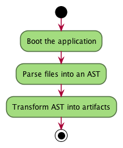
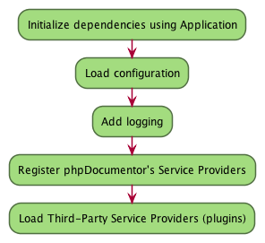
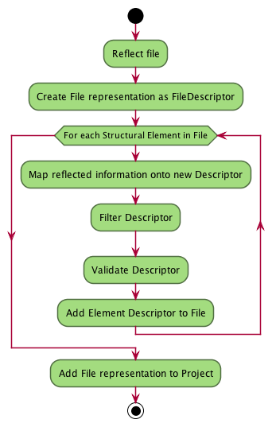

Application Flow¶
Introduction¶
Generating the documentation for a project involves a fair number of steps but can be best summarized with the following Activity Diagram:

This three step process enables phpDocumentor to break down a project into its most basic components, called Structural Elements, and depending on which template was selected generate various types of output.
An example of such output may be a website that documents the project’s internal API. Another example could be a checkstyle XML document that describes which errors in the project’s DocBlocks were found. Anything is possible.
In this document I provide an overview of all moving parts in the application but do not explain each technical term in-depth. At the end of this document are reading suggestions but I recommend having the 用語集 within reach.
The flow in more detail¶
The complete application flow is perhaps best described with the Activity Diagram below. It should cover most of the large activities that occur in the application, including when and which events are emitted. This Activity Diagram does not include detailed activities such as logging or translating.
Another thing to note is that the impact of Service Providers is not visible in this flow. That is not because Service Providers don’t have their effect but because Service Providers blend in with the complete application flow and are mainly used to add writers, filters validators and other components that can are automatically used during the transformation process.
In the subchapters I will provide more detail on the individual sections and show the activities that are collapsed in this diagram (such as Boot the application, Add File Representation to Project and other activities that are surrounded by an additional border)
![skinparam activityBorderColor #516f42
skinparam activityBackgroundColor #a3dc7f
skinparam shadowing false
start
:Boot the application|
partition "Parse files into an AST" {
:Set parsing parameters;
:Find project files;
:Remove stale items from Descriptor Cache;
:Load Descriptor Cache;
while (There are unprocessed files?) is (Yes)
if (File is cached) then (No)
:Add File Representation to Project|
else (Yes)
:Load Cached File;
endif;
endwhile (No);
:Write partial texts to Project;
:Save Cache to Disk;
}
partition "Transform AST into artifacts" {
:Load Cache From Disk;
:Load Templates;
:Load Transformations from Templates;
while (For each Compiler Pass)
if (Pass is "Transformer")
:Transform all files|
elseif (Pass is "Linker")
:Link FQSENs to Descriptors|
else
:Execute compiler pass specific behaviour;
endif;
endwhile;
}
stop](../_images/plantuml-03c8ae9a363751e01c72865c48f4682cfaa163ab.png)
Boot the Application¶

Parse files into an AST¶
Note
The following Activity Diagram below is an excerpt from the Diagram at the beginning of the chapter and is repeated to support the text.

In order to be able to properly generate documentation phpDocumentor needs to find all files in the project that you would want to document. There are several properties that influence which files are eligible for your documentation based on provided parameters and options, such as directories and a listing describing which files are ignored.
If the given target folder contains a cache of a previous run of phpDocumentor then this is loaded. phpDocumentor will remove all files from that cache that are not present in the file listing that was found earlier so that it doesn’t contain any entries that are not intended to be documented.
Once that is done phpDocumentor should have a description of your Project, represented by an instance of the ProjectDescriptor class, that may be pre-populated with the Abstract Syntax Tree (other Descriptors) that were discovered during a previous run.
When phpDocumentor is ready to create, or actually refresh, the AST it will iterate over all files that were discovered. A hash is generated of each file and checked with the cache if this file is still fresh. Should the hash not exist in the Cache or it differs for a given file then phpDocumentor will create a new representation of that file and overwrite the previous one.
Important
At this stage all links between elements, such as that of an @see tag, are still strings containing the FQSEN that references another element. It is not until much later, in the Linker, where the text references are converted into actual references to other objects.
This is done because:
- caching references to objects can easily disconnect the two objects
- if a file is refreshed then all links are lost and should be re-made
- filtering and alterations may be done at later stages and actual references may become stale or new ones should be made.
Add File Representation to Project¶

![skinparam activityBorderColor #516f42
skinparam activityBackgroundColor #a3dc7f
skinparam shadowing false
start
#f9f9f9:Emit event "transformer.transform.pre">
#f9f9f9:Emit event "transformer.writer.initialization.pre">
:Boot involved writers;
#f9f9f9:Emit event "transformer.writer.initialization.post">
while (For each Transformation)
#f9f9f9:Emit event "transformer.transformation.pre">
:Execute associated Writer and pass Transformation;
#f9f9f9:Emit event "transformer.transformation.pre">
endwhile;
#f9f9f9:Emit event "transformer.transform.post">
stop](../_images/plantuml-e3ff6ead5693bbfbf82e0740fb03870990e1ca91.png)
Link FQSENs to Descriptors¶